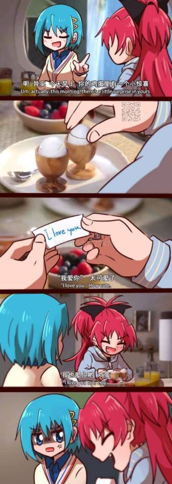
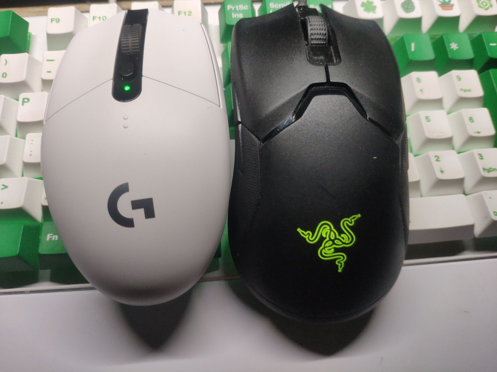
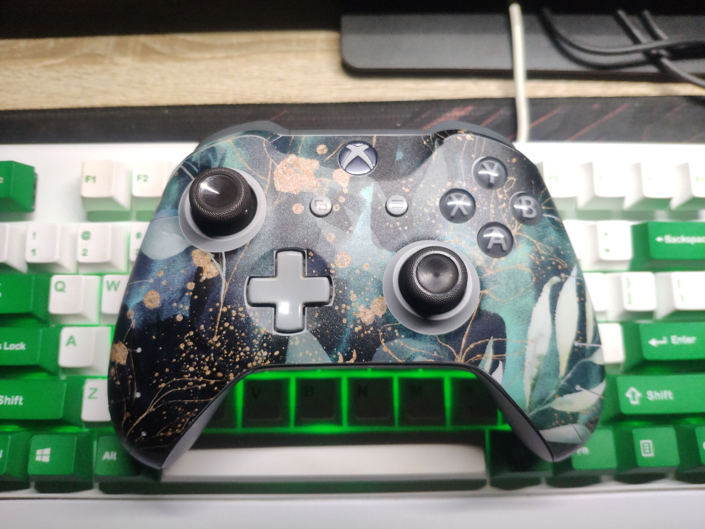
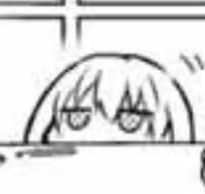

——热情似火的妞儿谁不爱。
又摸了一天的鱼，临近傍晚的时候才出去觅食。
有一句话说得好“不要在饥饿的时候逛超市”，于是我就买了一堆吃的。
没想到这个季节竟然还有凤梨吃，真是难得啊，于是我买了一个，刚吃完。
感觉自己舌头被凤梨吃了（
现在在伸着舌头哈气。
这图莫名奇妙让我想起了一些奇怪的事情。
每次看到好友炫耀，我都有点酸（
也不知道算是好事还是坏事，就是酸，羡慕。
其实呢，仔细想想也确实，很多事情，距离我挺遥远了，比如高中，青春飞扬什么的。
生命如此多美好，但是太多的美好和我并没有关系，硬蹭究竟是局外人，看着这一切，只能“舔舔手指”聊以自慰。
偶尔我也会想到自杀之类的东西。当然，不要激动，我这种想，和大多数人的那种想是一样的，也就想想。
就我目前的人生轨迹来看，我注定一生平凡，无大风大浪，就这样悄悄地来悄悄地走。
我也确实想做点啥，做出点能够让人夸夸的成绩出来？最后还是三天打鱼两天晒网。
偶尔也想出行，但是疫情不适合去哪，去找朋友又被拒绝。
哎，不聊这个了。
我最近买了个鼠标，罗技304，白色的，相当地好看。并且听闻续航相当地长，刚好适合我外出携带。
旁边是我现在用的雷蛇。
我也确实很喜欢白色这种颜色，只是受于小时候的太皮老是弄得一身泥土的限制，从小就穿深色衣服。
当然，现在看来，白色的衣服也不一定适合我，毕竟白衬黑，黑衬白嘛。突然想提一句：石榴红般耀眼的裙子，是要生的干净水灵白嫩的姑娘穿，最为合适。这种情景，我应该是见过的，只可惜现在记不清了，只是知道有这么一种美好。
我还买了个贴纸，贴了一下我的xbox手柄，就当是换了个新皮肤。摇杆也换了一下，换成了黑色的，本来我是想上个二刺螈图案的，可惜想来弄上去不好看，不如不弄。（不好看是因为贴上去之后图案会被分割。）
像这种花花的图案，挺好看的。
(๑•̀ㅂ•́)و✧
之前想过买件这个花衬衫来着，但是最后没有买，因为不确定是否适合我，并且，真的要买的话，要同时买几件才行，好贵啊。
下次试试吧，确实要活的舒服一点，也要活得帅气一点，不然怎么勾搭朋友哟。
上面说起雷蛇，我突然想起，我这个雷蛇其实是无线鼠标来着，因为我太懒了，所以一直插着电使用……鹅妈妈喵喵喵！
头疼，我想写个markdown都不成。因为经过hexo的一堆编译，图片路径位置会变得很奇怪。下次再研究下。
现在，给目，斯哒妥！